Open source · Apache 2.0 · four tools, one rule
Your AI does the work. You hold the key.
Let AI agents query your databases, inspect your queues, check your files and write your code — without ever holding your credentials.
-
SQL databases
locksql
Every SQL statement your agent writes is parsed and weighed before it runs; personal data comes back masked.
-
RabbitMQ
lockmq
Agents inspect your brokers through read-only operations; every message read approved, bodies masked.
-
Files
lockfile
Agents ask yes/no questions about a file and get 1 or 0 — never a byte, a name or a size.
-
Claude Code agents
lea
Run many agents in a container that never sees your SSH keys or your private network, all from one deck.
The shared principle
The agent asks. A console you hold answers.
In-agent approval is a convenience; a separate approval process is a boundary. The credentials and the only connections live in a console that runs under its own OS account, in a terminal you keep in view.
AI agent
your account · no credential, no connection
locksql run PLAN_ID
SELECT id, email FROM customers
WHERE country = 'BE' LIMIT 20id | email
1 | <redacted:r1.1.2>
2 | <redacted:r1.2.2>Console
its own OS account · holds the keys · asks you
class READ · est. 410 rows examined
PII columns touched: customers.email
╰─ Approve? [y/N] yDatabase
MariaDB · MySQL · PostgreSQL · SQLite
- Ask. The agent proposes a query, a read or a plan. It has no password and opens no connection.
- Approve. The console checks it, shows you exactly what will run and waits for your approval. No answer means denied.
- Answer. Only the answer goes back: masked rows, masked messages, or a 1 / 0. The audit log keeps who asked what.
How the four fit together
One boundary around the agent, one console per data source.
Where agents run
lea
Claude Code agents in a container that sees one projects directory. They reach the internet only through an egress proxy that refuses your private network.
What agents reach, through a console you hold
locksql
SQL databases
lockmq
RabbitMQ brokers
lockfile
Files on S3, SFTP or disk
Shared core
lockkit
The console, its isolated account and socket, policies the AI may tighten and only you loosen, the approval screen, the audit log, credentials from a prompt, the OS keychain or Vault, personal-data masks, MCP and agent wiring.
Each tool works alone. locksql works with any agent; lea runs without locksql. Together, lea init builds the locksql console image and wires it for your agents.

~/.ssh and reaching 192.168.1.10 are blocked.Quick start
Pick one. Running in a few commands.
# 1. Install
curl -fsSL https://raw.githubusercontent.com/DavidGodefroid/locksql/main/scripts/install.sh | sh
# 2. In your project: the console account, your agents, a database profile
locksql setup
# 3. In a session of the locksql account, start the console and keep it open
locksql console --project DIRThen ask your agent: “how many orders were placed yesterday?”. Install options, checksums and signatures
# 1. Install
curl -fsSL https://raw.githubusercontent.com/DavidGodefroid/lockmq/main/scripts/install.sh | sh
# 2. Separate the console from the agent (once per machine)
lockmq install
# 3. In your project: a broker profile and your agents
lockmq setup
lockmq init
# 4. In a session of the lockmq account, start the console and keep it open
lockmq console --profile dev --project DIR# 1. Install (checks the release signature with cosign)
curl -fsSL https://raw.githubusercontent.com/DavidGodefroid/lockfile/main/scripts/install.sh -o install.sh
sh install.sh
# 2. The separated setup: console account `lockfile`
sudo lockfile install
# 3. In the lockfile account: a source, two plugins, the console
lockfile profile add samples --source local --path /srv/samples --prefix invoices/
lockfile plugin install format.is-pdf@1.0.0
lockfile console --profile samples
# 4. In your account: wire your agent, then ask
lockfile init claudecurl -fsSL https://leadeck.dev/install.sh | sh
leaIn the first agent, run /login once. Press n for another agent. leadeck.dev
Know the limits
All four are pre-release. The console is the enforcement point; skills and tool descriptions only guide the agent. Masking is best effort. Each project documents what the agent can see and its residual risks in its security model: locksql, lockmq, lockfile, lea.